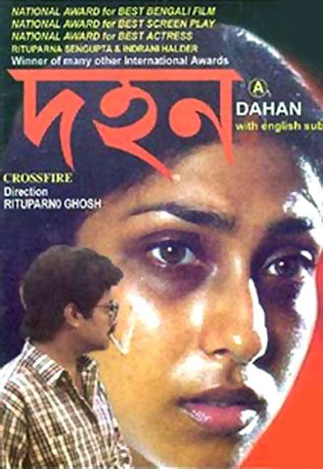

Bubbul has become the Heroine of the paranormal story
that she has listened in her childhood.
She took revenge against the torture
that has faced each and every bride in their in-laws house.
She has become the demon herself.
THAPPAD
Are the house-wives truly happy??
Language
Hindi
Being a house wife is a 24-hours' job.
Sacrificing all dreams,
a house-wife invests her whole life in the service of her in-laws.
What if she is underestimated by her life-partner also?
Amrita was a happy house-wife.
But a single slap by her husband,
made her understand that she was pretending to be happy in her conjugal-life.
DOHON
Can women get the proper justice in society??
Language
Bengali

A woman can easily become the victim of rape or molestation.
Can she easily get the justice??
The society tells to keep her mouth off.
She was a victim, and becomes a victim further.
Romita, a newly-wed house-wife didn’t want the justice
after getting molested at the railway station
because of the shame of the society.
But alas, she could not save her dreams of forming a happy family also.
In society, a molested woman gets a dark scratch in her characer.
SWEATER
Women should be developed for themselves!
Language
Bengali
Girls are usually busy to gain
the qualities for getting married.
Tuku, realized that
she would be skilled not for getting married,
but for herself.